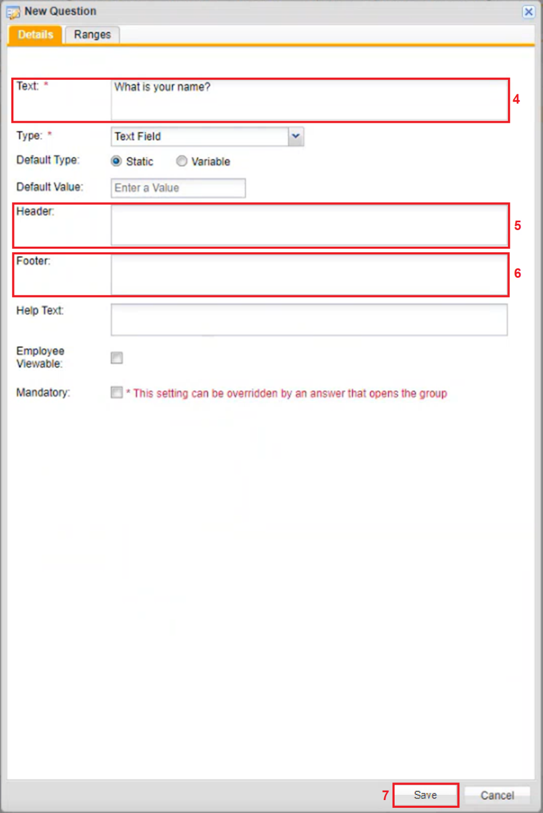
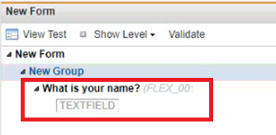

Adding a Text Field Question to a Charting Form
Text fields are added when a small room is needed for responses to be filled in by users.
To add a Text Field question to a Charting From
-
Right click the Group created under the New Form.
A Menu appears.
-
Click New Question.
Another menu is displayed to the left with a list of all the different types of questions a user can create.
-
Click Text Field.
The New Question window displays with the Type dropdown textbox automatically filled in as Text Field.
If you double click on New Question, the Text Field question type will open. Click the Type dropdown textbox to change the question type if needed.

-
In the Text textbox, type in a question.
-
In the Header textbox, type in instructions that you want to show prior to a question.
-
In the Footer textbox, type in what you want to show after a question.
-
Click Save.
The question is displayed under the New Group with a text field for users to place their response.
